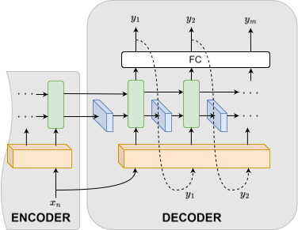

ConvLSTM: Architecture

ConvLSTM replaces the fully-connected gates of a standard LSTM with convolutional ones, so spatial correlation between neighboring stops and routes is modeled alongside the temporal dynamics. The encoder–decoder design follows Petersen et al.'s: the encoder folds a sequence of link-level inputs into a context vector, which the decoder unrolls into the multi-step forecast.
Multi-step rollout strategy
| Strategy | Idea |
|---|---|
| Auto-regressive | Own prediction fed back in as the next input — matches inference, but errors can compound. |
| Teacher forcing | Ground truth fed in at every training step — stable, but mismatches inference (exposure bias). |
| Scheduled sampling | Anneals from ground truth to own predictions during training, bridging the two. |

Model depth
Single-layer vs. dual-layer ConvLSTM stacks were compared, trading added capacity against overfitting risk on a comparatively small, simulation-generated dataset.